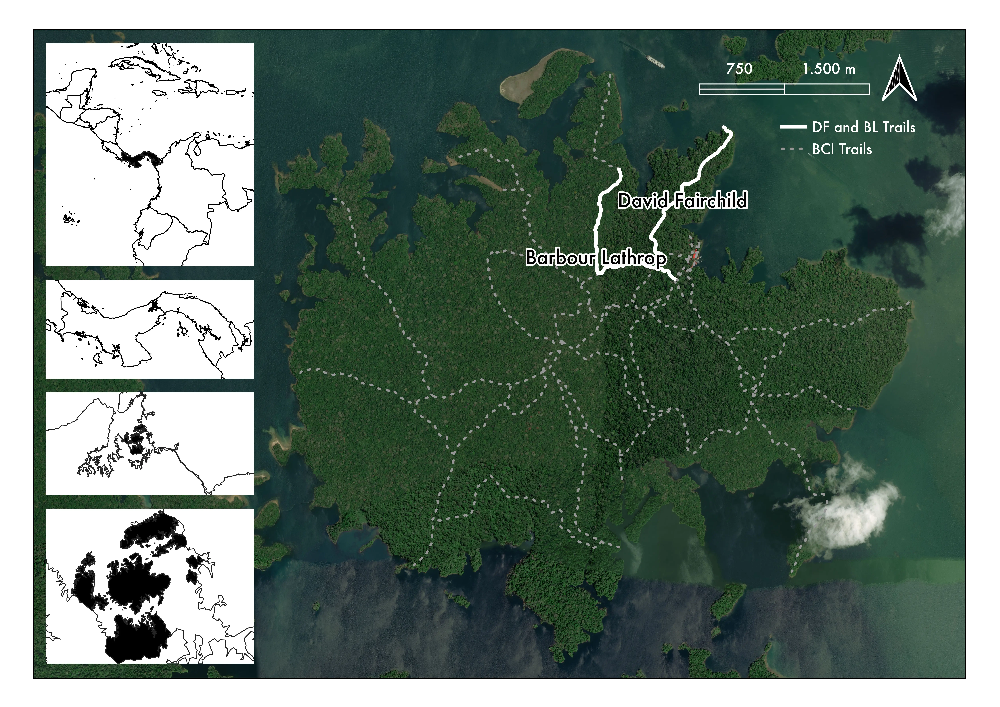

One of the world’s most studied forests and Tropical Ecology’s Mecca is Barro Colorado Island (BCI) located in Lake Gatun in the Panama Canal. For over 100 years, it has served as the hub for Neotropical research and the cradle for many renowned scientists. It is partially administered by the Smithsonian Tropical Research Institute (STRI), a Panamanian offshoot of the Smithsonian Institution. The island can be traversed on foot via a network of trails, each named after a famous researcher and founder of the field station. Among them are Fairchild and Barbour Lathrop.
I didn’t know about the connection between BCI and Fairchild, but there are botanical historians dedicated to tracing his footsteps, including Javier Francisco-Ortega, from whom I gathered the information to compile the following notes.

In 1924, Fairchild visited Panama with other naturalists, such as William M. Wheeler and James Zetek (BCI’s first director), shortly after the research station had been inaugurated. While most of the group focused on the fauna, Fairchild sowed the seeds that transformed BCI from a place of little botanical interest into a “thriving centre for botanical studies”. He was also actively involved in planning the infrastructure of BCI, and Barbour Lathrop provided funding for its establishment. Although his visit to Panama was not part of his expeditions in search of edible plants, he made a number of botanical observations and transported 27 plant species back to the US. It is worth mentioning, however, that some of these species may also have come from Cuba, as it was part of his itinerary.
It is also worth noting that Fairchild visited the grounds of what would become Summit Gardens, a botanical garden outside Panama City that is now well established and conducts its own research and conservation work. It was also part of a network of gardens that shared resources. If you would like to know more about Fairchild’s journey in Panama, I highly recommend reading about it in the sources listed below:
Fairchild also worked on several Caribbean islands aboard the Utowana research yacht. This work was crucial in consolidating the biological collections of the Cienfuegos Botanical Garden (CGB), one of Cuba’s most important botanical institutions. Although Fairchild only visited the CGB for the first time in 1924, he had previously sent numerous accessions to build the collection. Similarly, Fairchild only personally participated in the Utowana expeditions of 1931 and 1933, but plenty more happened and they engaged both in zoological and botanical activities. Plant material was sent to the USDA and later to the CGB, where over 278 documented accessions are held.
The Utowana was originally a vessel owned by another philanthropist, Allison Armour, and in the early 1920s it was used for expeditions to Africa, the Canary Islands, and the Mediterranean.
If you would like to know more about Fairchild’s travels to Cuba and his expeditions in the Utowana, I highly recommend these:
Perhaps closest to me is Fairchild’s visit to my home country of Colombia, and also my hometown of Barranquilla. He did so in 1948 as part of his last expedition, when he was 79 years old, and while the bulk of his time was spent in Venezuela, I mainly want to highlight his brief time in Colombia, specifically Barranquilla, Cartagena, and Turbaco (where The Cartagena Botanical Garden is located).
The visit to Venezuela was made possible thanks to the arrangements of tropical botanist Henri F. Pittier. Pittier was one of the most influential botanists in Venezuela at the time, having created the National Herbarium, and he was a friend of Fairchild's for many years. Although his travels through Venezuela were officially government-sanctioned, he also engaged in plant exploration, looking for cultivars of bamboos, palms, annonas and arracacha (Arracacia xanthorrhiza Bancr.).
After Venezuela, Fairchild headed to Colombia with the intention of visiting his daughter, Nancy Bell Fairchild Bates, who was based in Bogotá. However, he only made it as far as the Caribbean coast, where he collected specimens of Bactris guianensis (L.) H.E.Moore (Corozo) by visiting markets and employing gardeners and local farmers. Some of the Bulnesia arborea (Jacq.) Engl. specimens at the Fairchild Tropical Botanical Garden may have originated from this part of the expedition. However, the journey was cut short due to Fairchild's deteriorating health and the Bogotazo, which occurred while he was in Barranquilla.